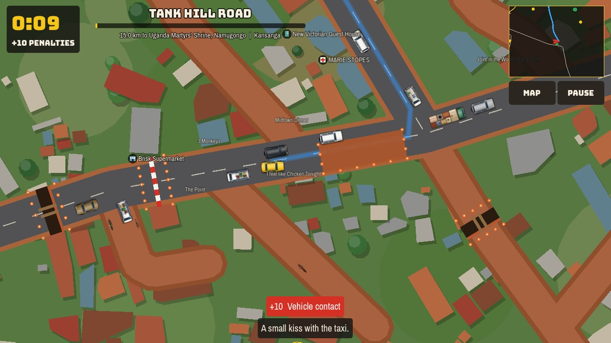
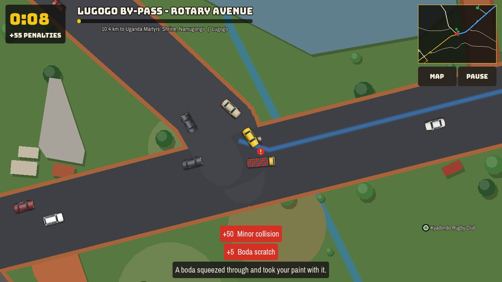
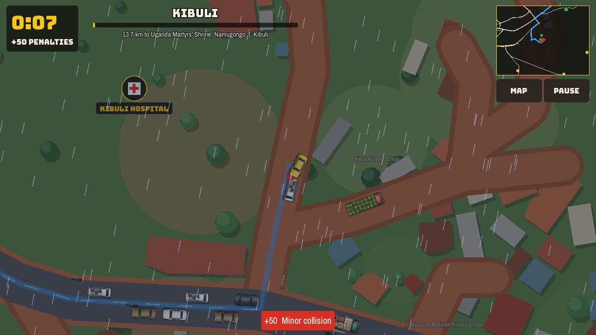
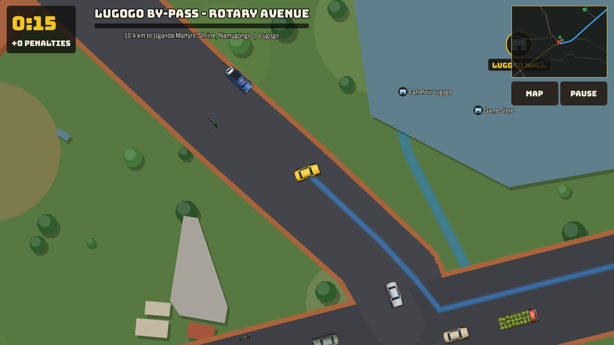
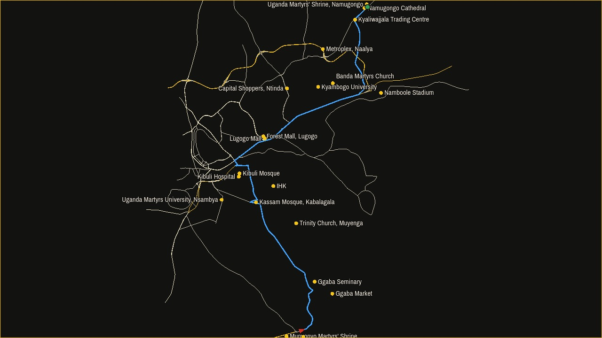

Play Kampala Jam
Drive from Munyonyo to Namugongo on the real roads of Kampala, as fast as you can, without running over a boda boda.
The game is free. You do not need an account.
Start playingPlays in your browser. It is a large download the first time, so use Wi-Fi if you can. You can also download the game.

How the game works
- Press Drive. The game decides what day it is.
- Get from Speke Resort, Munyonyo to the Uganda Martyrs' Shrine, Namugongo. The journey is about 24 km. Take any road you like.
- Your score is your time in seconds plus your penalty points. A lower score is better.
- If you finish, the next day is harder. If you do not, you try the same day again.
You lose the day if you reach 1,000 penalty points, or if you run out of time.
You will know these roads
The roads, buildings and place names come from OpenStreetMap. Ggaba Road, Jinja Road and Tank Hill Road are where you would expect them to be.
You will pass places like Kassam Mosque, Lugogo Mall, Forest Mall and Kyaliwajjala Trading Centre. The map also marks Kibuli Mosque, the International Hospital Kampala and Namboole Stadium, if you take a different way.




What is on the road
- minibus taxis, which stop without warning
- boda bodas carrying passengers, mattresses and matooke
- old Toyotas, 4x4s, school vans and Coaster buses
- overloaded lorries, tippers and fuel tankers
- bicycles and handcarts
- police and army vehicles, and VIP motorcades
You also have to deal with open drains, manholes with iron bars sticking out, piles of marram, trenches, flag-wavers and road closures. Nobody warns you about the closures.
Penalty points
| Incident | Points |
|---|---|
| Scratched by a boda boda squeezing through | 5 |
| Scratched by manhole iron bars | 8 |
| Contact with another vehicle | 10 |
| Ignoring a flag-waver | 10 |
| Hitting an obstruction | 15 |
| Altercation with a boda boda rider | 25 |
| Wheel in an open drain | 40 |
| Minor collision | 50 |
| Trench, taken too fast | 60 |
| Hitting a police or army vehicle | 80 |
| Moving when a convoy is passing | 120 |
| Swallowed by a ditch hidden under flood water | 150 |
| Hitting a bicycle | 250 |
| Running over a boda boda | 300 |
The days get harder
You do not choose a level. You move on to the next day when you finish.
- Sunday Morning
- An Ordinary Tuesday
- Boxed In: a short escape from Muyenga to Kibuli, with the roads around you closed
- Friday Evening
- Rainy Season
- Back to School
After that, each new school term has more traffic than the last.
Get the game
You can play in your browser or download a copy for your device.
| Device | Download | Size |
|---|---|---|
| Android | Android app (APK) | 86 MB |
| Mac | Mac app (zip) | 68 MB |
| Windows | Windows app (zip) | 46 MB |
| Linux | Linux app (zip) | 36 MB |
| iPhone and iPad | No app yet. Try it in your browser. |
How to install it
Android
- Download the APK on your phone and open it.
- If your phone asks, allow your browser to install unknown apps.
- Choose Install.
The game is not on Google Play, so your phone may warn you about it.
Mac
- Download the zip and open it.
- Move Kampala Jam to your Applications folder and open it.
- Your Mac will say it cannot check the app. Go to System Settings, then Privacy & Security.
- Scroll down and choose Open Anyway.
You only need to do this once. It happens because the app has not been notarised by Apple.
Windows
- Download the zip and extract it.
- Open KampalaJam.exe.
- If Windows says it protected your PC, choose More info, then Run anyway.
Linux
- Download the zip and extract it.
- Run
chmod +x KampalaJam.x86_64, then./KampalaJam.x86_64.
How to play
| Device | Drive | Brake | Hoot |
|---|---|---|---|
| Keyboard | Arrow keys or W, A, S, D | Down or S | Space |
| Touch screen | Left thumb: point where you want to go, and push further to go faster | Right thumb: Brake | Right thumb: Hoot |
| Gamepad | Left stick and right trigger | Left trigger or B | A |
Press M to see the map and Esc to pause.
If the game does not work
The browser version shows a blank green screen or stops responding
This happened in Google Chrome on an older iMac, where Chrome's graphics setup could not run the game. The same iMac ran it well in Firefox. Try these in order:
- Open the game in Firefox.
- Download the app for your device instead.
What has been tested
| Version | Result |
|---|---|
| Mac app, on an older iMac | Works |
| Firefox on an older iMac | Works |
| Chrome on an older iMac | Does not work |
| Android app, on an emulator | Opens. Driving by touch has not been tested yet |
| Windows and Linux apps | Not tested yet |
| Phone and tablet browsers | Not tested yet |
Tell us if it works or fails on your device, and what device it is.
About this game
The idea for this game comes from an article by Dr Ian Clarke in New Vision. He suggested a computer game called Kampala Traffic, with the same journey, the same hazards and the highest penalty for running over a boda boda. This does not mean that Dr Clarke or New Vision endorse this game.
Kampala Jam is a comedy. The road works, closures and incidents in it are invented. They are not reports about any real contractor, authority or person, and the contractors named on signs in the game are made up. The game does not collect your data. Your progress is stored only on your device.
The source code is on GitHub and you can reuse it under the MIT licence. The map data has its own licence.